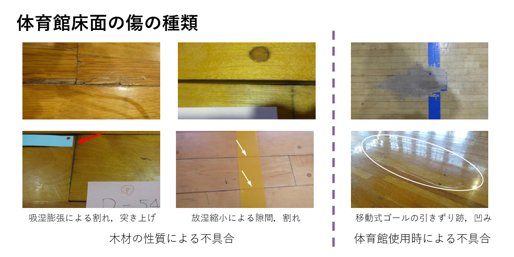
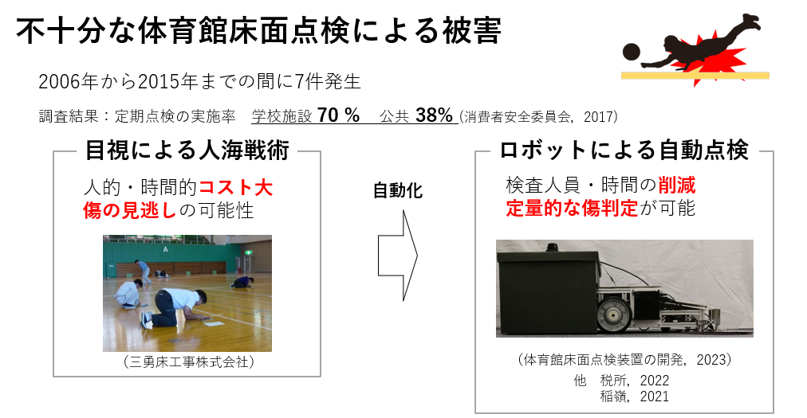
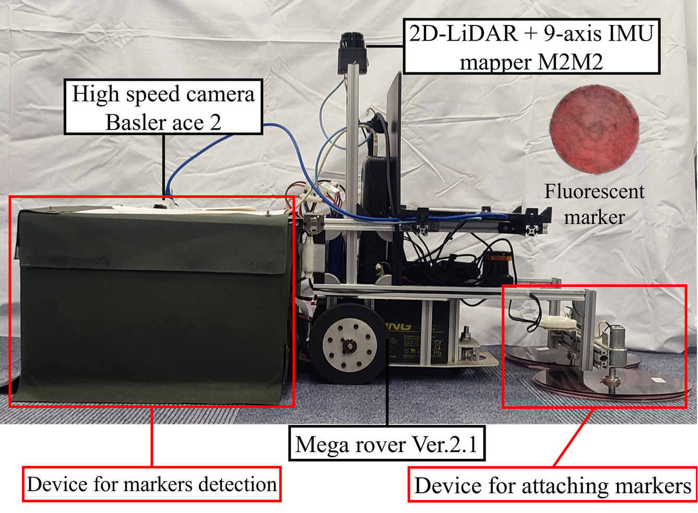
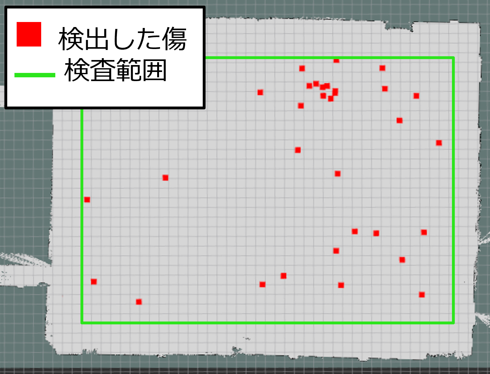

体育館自動点検装置

体育館のフローリングの傷を自動で検出する装置を開発。従来の目視検査の課題であった人的・時間的負担や検査精度のバラつき問題を解決し、効率的で均一な点検を実現。
プロジェクトの詳細
近年、体育館の床から剥離した床材による負傷事故が報告されており、重症例では剥離した床材が臓器にまで達する事例もある。消費者安全委員会の調査によると、平成18年から平成27年までの間に7件発生していた。しかし、体育館床面の定期点検を実施している施設は学校で70%、公共体育施設で38%と十分ではない。その主な原因として、既存の点検方法が目視による人海戦術であり、人的・時間的コストが大きいことが挙げられる。また、検査員の裁量に依存するため、点検品質にばらつきが生じるという問題もある。
このプロジェクトは、これらの問題を解決するために設計された。自律走行と自己位置推定機能を備えたロボットに、傷を自動検出するシステムを搭載することで、人的負担を軽減し、効率的かつ均一な点検が可能となった。自動化されたシステムは、目視検査に比べて高い精度と信頼性を提供し、体育館の安全性向上に寄与している。
使用した技術：C++, Python, 3DCAD, 基板設計, SLAM, 機械学習, Jetson
ギャラリー



